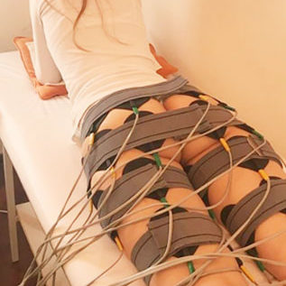
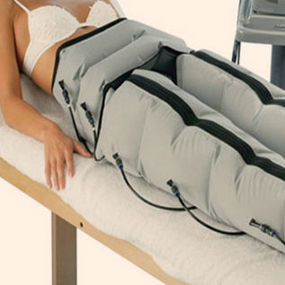
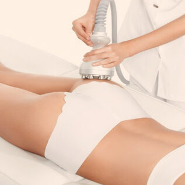
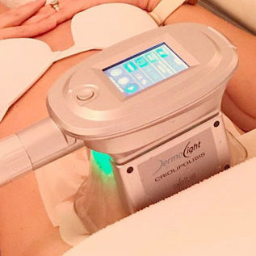
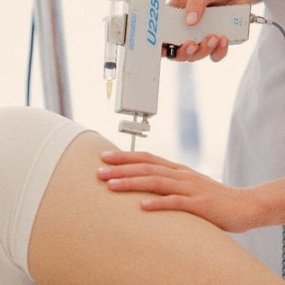
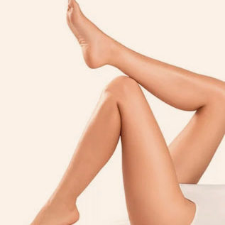

Electroestimulación
Es un tratamiento de gimnasia que trabaja en simultaneo a nivel muscular, tejido adiposo y sistema linfático.
Tonifica rápidamente los músculos, es muy efectivo para tratar flacidez, reducir el contorno corporal y mejorar el funcionamiento del sistema circulatorio.
Mejora el retorno venoso-linfatico, aporta oxígeno extra y facilita la eliminación de toxinas, mejorando notablemente el aspecto de la piel de naranja y la celulitis.
3

Presoterapia
Es un tratamiento de drenaje linfático mecánico que a través de unas botas neumáticas realiza un masaje drenante desde los pies hasta el abdomen:
-Ante problemas de retención de líquidos logrando un perfecto drenaje linfático a través del que se eliminan líquidos y toxinas acumuladas.
-Como complemento de tratamientos para sobrepeso, celulitis y varices.
-Para mejorar la circulación cuando existen problemas post-operatorios.
6

Tri-Cell
Es un tratamiento no invasivo ideal para pacientes que presentan celulitis, flacidez y acumulación de grasa corporal.
Tri-Cell utiliza calor para estimular naturalmente la producción de colágeno y reducir el tejido adiposo. El calentamiento selectivo sobre las células grasas acelera su metabolismo provocando la disminucion de su tamaño tamaño, y modelando asi el contorno corporal, reduciendo la celulitis y mejorando el poceado de la piel.
Por otro lado, estimula la produccion de colageno y elastina, lo que tensa la piel flacida y mejora notablemente el aspecto de las estrias.
9

Criolipolisis
Es una terapia que reduce adiposidad localizada mediante frío controlado en una sola sesión mensual.
Actúa generando una succión controlada de la zona con adiposidad y exponiendola a temperaturas por debajo de los 0 grados durante un tiempo determinado. Las celulas grasas no son capaces de sobrevivir a estas temperaturas por lo que se produce la cristalizacion y muerte celular (apoptosis), sin dañar tejidos circundantes.
Luego el cuerpo elimina las células cristalizadas a través de procesos metabólicos naturales de forma progresiva.
12

Mesoterapia
Es un tratamiento que se basa en la aplicación intradérmica de principios activos especificos para tratar celulitis, eliminar adiposidad localizada y mejorar la flacidez y el aspecto de la piel.
Dependiendo de la necesidad de cada caso se aplican diferentes tipos de sustancias con efecto drenante, circulatorio, lipolítico o reafirmante.
Al aplicar porciones pequeñas de principios activos en la dermis, aumenta el flujo sanquineo local, mejora mucho el drenaje linfático, se remueve el tejido ya endurecido de la piel, y se disuelven los depósitos de grasa.
La eliminación de las toxinas y de la grasa sucede posteriormente de manera natural a través de la orina.
15

Depilación láser
Es el tratamiento más seguro y efectivo disponible en la actualidad. Elimina el vello en forma rápida y eficaz, virtualmente indolora y aplicable a todo tipo y color de piel y de vello.
El láser penetra en el folículo piloso destruyéndolo de raíz, sin dañar la piel. Luego de cada sesión, la piel queda sin vello y la paciente se va totalmente depilada.
18